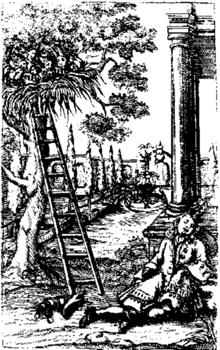

|
||||||||||||||
| Autoren | ∞ | Werke | ∞ | Neu | ∞ | Information | ∞ | Shop | ∞ | Lesetips | ∞ | Textquelle | ∞ | |
Abraham a Sancta Clara
Wunderlicher Traum von einem großen Narrennest
Abraham a Sancta Clara<< zurück weiter >>

Ich Gaudentius Hilarion edler Herr von Freuden-Thal habe vor etliche Monat einen wunderseltzamben Traum gehabt: es hat mir getraumet / als seie ich gereist in unerschidliche Länder / worinnen mir sehr vil denckwürdige Sachen unter die Augen kommen; unter anderen gelangte ich auch in Franckreich in die Statt Narbona, wo vor Zeiten Julius Caesar seine Legiones, und Soldaten-Schaar gehabt; in diser Statt Narbona bin ich in eines vornehmen Herrn Garten spatzieren gangen / daselbst hab ich auff einem dicken Eichbaum ein großmächtiges Nest wahrgenommen / hörte auch anbei ein zimbliches Zwitzeren / kunte aber nicht urtheilen noch schliessen / was es für ein Nest seie / stache mich also der Fürwitz / daß ich umb ein Leiter geschaut / und hinauff gestigen / da fande ich Wunder über Wunder / dann es war kein Vogel-Nest / sondern ein Narren-Nest / und sassen zwölff Narren in disem Nest; muste also wider alles Hoffen ein gantz Dutzet Narren ausnehmen; Der allererste war
Ein Einfältiger Narr.
Wann man die Sach reifflich überlegt / und wol erörthert / so seind die jenige Leuth eigentlich keine Narren zu nennen / welche da einen öden und blöden Verstand / und einen wurmstichigen Vernunfft haben / wol aber die jenige seind für grosse Narren zu schelten / welche da Ubles thun / und sündigen / laut Göttlicher Schrifft: qui cogitat mala facere, stultus vocabitur. Proverb. c. 24. Worüber der H. Kirchen-Lehrer Hieronymus also schreibet: Ne putares stultum aestimandum fuisse eum, quem hebetem, tardum ingenio videres, palam ostendit, quia ille stultus sit vocandus, qui vel cogitatione peccati suggestioni consentit, tametsi acer ingenio videtur existereDamit man nicht meine, der sei für närrisch zu halten, der stumpfen, trägen Geistes scheine, erklärt er offen, jener sei ein Narr zu nennen, der auch nur in Gedanken der Versuchung zur Sünde nachgibt, obwohl er scharfen Geistes zu sein scheint. . ibi in Proverb. c. 24.
Jetzige verkehrte Welt aber pflegt gemeinglich dergleichen einfältige Leuth für Narren außzuschreien: es hat fürwar der Mensch billich dem gütigisten GOtt höchstens zu dancken / daß Er ihme einen guten Vernunfft geben / wie dann der David GOtt dem HErrn nicht sovil gedanckt / umbweilen er ihme die Stärcke ertheilt / daß er Löwen und Beeren zerrissen; nicht sovil gedanckt / daß Er ihn vom Hirten-Stab zum Scepter / von der Schmeer-Kappen zur Cron erhoben; als er gedanckt hat umb den Verstand / so ihme die Göttliche Freigebigkeit gegeben; Benedicam Dominum, qui tribuit mihi intellectum. In der Welt gibt es freilich wol an allen Orthen sehr witzige / und verständige Leuth / man sihet aber auch / daß nicht allenthalben ein Cato, sondern auch ein Mato anzutreffen seie; Zimblich einfältig war jener Baur in Franckreich.
Ein König in Franckreich verirrte sich einsmahls auff der Jagt von seinen Hoff-Leuthen / als er nun wider auff den rechten Weeg kommen / und gantz allein wider nacher Pariß geritten / ist ihme ein Baur begegnet / welcher ebenfalls nach der Statt gienge: mit disem liesse sich der König zur Zeit-Vertreibung in ein Gespräch ein / unter andern meldet der Baur / daß er so gern möchte den König sehen / was er dann für ein Auffzug habe / und wie er gestaltet seie; worauff der König / wolan / so komb mit mir / ich reite ebenfalls zum König / du solst ihn heut noch sehen: wie kan ich aber / sagt der Baur / es wissen welches der König ist? weist du was / sagt der König / wann wir in die Statt vor den König kommen / so gib Achtung darauff welcher unter allen den Hut auff dem Kopff behält / da die andern alle mit blossem Haupt stehen / derselbe ist König / wie sie nun in solchem Gespräch unter die Stadt-Pforten kommen / sihe! da wartteten alle Königliche Bediente auff den König / und empfiengen ihn mit abgedeckten Häuptern; der Baur aber auß Unverstand behielte neben dem König den Hut auff dem Kopff: der König wendet sich zu ihm / und sprach / siehest du nunmehr wer König ist? der Baur antworttet / ich weiß es doch nit recht / aber einer auß uns beeden muß es ohne Zweiffel sein; der König muste über deß Bauren Einfalt von Hertzen lachen: Bald hierauff folgte ein Carotzen mit etlichen Damasen, der Baur vergaffte sich gantz in dise / und fragte endlich den Gutscher / was dise für Thier seind: der Gutscher sagte / es sein Calecutische Hennen: was Teuffel / antworttet der Baur / tragen sie doch den Schweiff auff dem Kopff! Freilich / sagt der Gutscher vor etlichen Jahren zwar haben sie den Schweiff ruckwerts nach sich geschleppt / weil man sie aber für Gassen-Kehrer gehalten / also hat die vornehme Madame Fontange bei dem Jupiter so vil außgebracht / daß ihnen der Hennenschweiff beim Kopff hat dörffen herauß wachsen: das ist ein anders / sagt der Baur / auff meinem Mist kratzen keine solche Malecutische Hennen. Wol ein einfältiger Narr!
<< zurück weiter >>